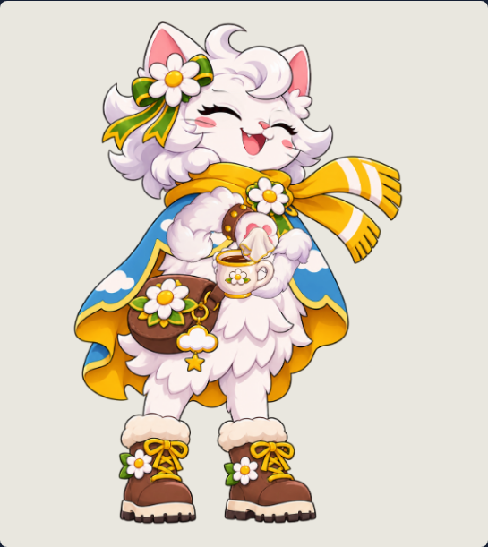
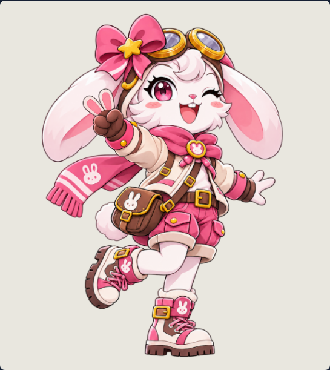
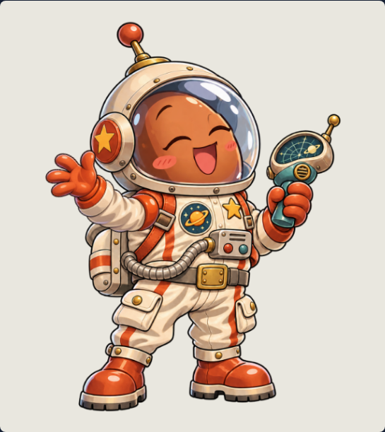
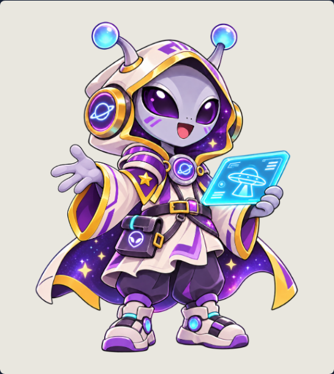

Mỗi nhân vật có thư mục riêng. Master và pilot được ghi theo quyết định duyệt thực tế; các layer mới vẫn cần duyệt riêng. Mở review hoặc GIF để xem từng nhân vật.
Cloud Daisy
cloud_daisy
Master đã duyệtPilot đã duyệtExport đạt
7 layer rig còn nháp · Production chưa duyệt
Mở review tương tác
Giới hạn chuyển động
- Draft reconstructed cloak differs in regions originally hidden by paws; owner must review
- Cup grip and cloth contact require visual approval
- Cup remains attached to paw; counter set-down is not implemented without a calibrated scene attachment
- No automatic art acceptance or runtime deployment
File kiểm tra & đường dẫn
Ollie Owl
ollie_owlMaster đã duyệtPilot chờ duyệtExport đạt
4 layer rig còn nháp · Production chưa duyệt
Động tác đặc trưng mới có một phần: signature_partial.
Mở review tương tác
Giới hạn chuyển động
- Reading book and adjusting glasses; laptop and coffee action await separate approved props
- Book and supporting wing remain a single base layer
File kiểm tra & đường dẫn
Mimi Bunny
mimi_bunny
Master đã duyệtPilot chờ duyệtExport đạt
4 layer rig còn nháp · Production chưa duyệt
Động tác đặc trưng mới có một phần: signature_partial.
Mở review tương tác
Giới hạn chuyển động
- Peace-sign greeting and blink; book/page-turn art not available
- Raised-leg master pose is preserved; planted foot stays fixed
File kiểm tra & đường dẫn
Astro Bean
astro_bean
Master đã duyệtPilot chờ duyệtExport đạt
4 layer rig còn nháp · Production chưa duyệt
Động tác đặc trưng mới có một phần: signature_partial.
Mở review tương tác
Giới hạn chuyển động
- Orange bean astronaut anatomy preserved; no wings or beak
- Scanner remains held in the stationary base; independent badge/scanner action awaits art
File kiểm tra & đường dẫn
Bear Explorer
bear_explorerMaster đã duyệtPilot chờ duyệtExport đạt
4 layer rig còn nháp · Production chưa duyệt
Động tác đặc trưng mới có một phần: signature_partial.
Mở review tương tác
Giới hạn chuyển động
- Hat-tip greeting and blink while holding the approved map
- Map opening and camera lift await isolated map/camera art
- Train gesture not exported in these two clips
File kiểm tra & đường dẫn
Gray Boo
gray_boo
Master đã duyệtPilot chờ duyệtExport đạt
4 layer rig còn nháp · Production chưa duyệt
Động tác đặc trưng mới có một phần: signature_partial.
Mở review tương tác
Giới hạn chuyển động
- Alien greeting and blink, original glowing guide tablet retained
- Guide and supporting arm remain embedded in base; cup and independent head tilt await art
File kiểm tra & đường dẫn